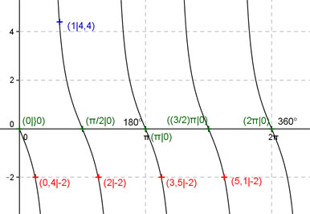

Aufgabe 175 Ergänzen Sie die Wertetabelle für x zwischen 0 und 2π: y = -2tan 2x x 1 0,4 oder 2 oder 3,5 oder 5,1 y 4,4 -2 Periode = π/2 Berechnung der Nullstellen: -2tan 2x = 0 --> Substitution 2x = u --> -2tan u = 0 --> u = k * π mit k = 0, 1, 2, ... --> Rücksubstitution liefert 2x = k * π |:2 --> x = k * π/2 x1 = 0 oder 0°, x2 = π/2 oder 90°, x3 = π oder 180°, x4 = (3/2)π oder 270° x5 = 2π oder 360°.  Funktionswert an einer Stelle x ermitteln: 1 * 180° x = 1 oder ---------- = 57,3° π f(1) = -2 tan (2 * 1) = -2 tan (2 * 57,3°) = 4,4 gerundet. Berechnung der x-Werte für y = f(x) = -2: f(x) = - 2 eingesetzt, existiert einmal zwischen 0 und π/2 bzw. 0° und 90°, zwischen π/2 und π bzw. 90° und 180°, zwischen π und (3/2)π bzw. 180° und 270° und zwischen (3/2)π und 2π bzw. 270° und 360° (siehe Graph). -2tan 2x = -2 |:(-2) --> tan 2x = 1 --> -2x = arc tan 1 = 0,785 |:(-2) x = 0,3925 (0,4 gerundet) --> -2 tan 2x (Spiegelung von 2tan 2x an der x-Achse) --> 0,4 * 180° x1 = 0,4 oder ------------ = 22,9° π x2 = (π/2 + 0,4) = 2 oder 114,6° x3 = (π + 0,4) = 3,5 oder 200,5° x4 = ((3/2)π + 0,4) = 5,1 oder 292,2° gerundet.